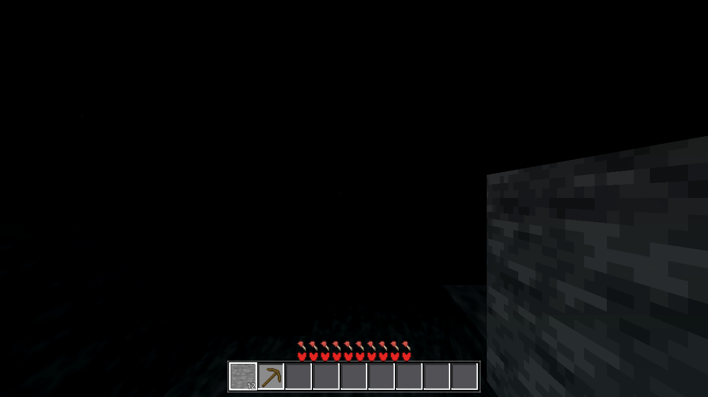
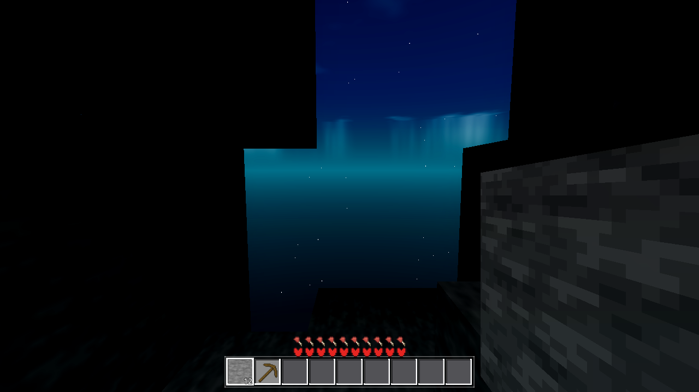

Verdict (Run-2, all in-session gates green): Run-1 shipped the 0.12 constant floor (the L-formula structure existed in-tree since AC-0128; the coordinator's heavy gates verified that state: g0 clean, genhash 25/25, boundary r4 walk p95 115 ≤ 125, build RC=0). The user found night still looks pitch black in the real build and directed the floor to ~20% of full sunlight: L = 0.20 + 0.80·max(u_day·sky, blk) — constant + gain = 1.0, so noon full-sky stays EXACTLY 1.0. Run-2 made exactly that change in all four chunk_lit_*.gdshader light lines (plus the probe expectations that mirror the formula), captured the floor probe PRE (ok:false, actual 0.12) → POST (ok:true, actual 0.20), and re-baselined nightday/viewlight. No web spec is referenced anywhere in this task's artifacts (user directive 2026-08-29); provenance = the in-repo AC-0128 L-formula structure, value 0.20 user-directed.
In each of godot/world/chunk_lit_{opaque,cutout,flower,fluid}.gdshader, the light line changed from float L = 0.12 + 0.88 * max(u_day * COLOR.r, COLOR.g); to float L = 0.20 + 0.80 * max(u_day * COLOR.r, COLOR.g); (header comments updated in the same four files). The constant is NOT day/night-split — the existing structure's constant IS the floor, and it is now 0.20 day AND night. The player-halo term L = max(L, 0.12 + 0.88 * pr / 15.0) (AC-0035) is a different contribution, not the ambient floor, and was deliberately left unchanged (d0 0.4133 anchor preserved; it also sums to 1.0 at pr = 15). Formula mirrors updated: main.gd floor/nightday/viewlight probes, player.gd viewmodel vm_refresh mirror (proven dependency — the viewlight probe asserts on those actual values), and one stale comment in chunk.gd. Grep for 0.12/0.88 in godot/ proves no other functional dependency (remaining hits: the halo term ×3, unrelated 0.12 viewmodel offsets, daynight smoothing).
| Cell (seed 44) | Run-1 (0.12/0.88) | Run-2 (0.20/0.80) | Gate |
|---|---|---|---|
| eff-0 sealed cave, midnight [0,17,-26] | 0.12 = 1.8/15 | 0.20 = 3.0/15 (L15 3.0) | floor probe G1 + nightday G2 |
| eff-0 sealed cave, noon | 0.12 (const floor, day unchanged) | 0.20 = 3.0/15 (day==night) | floor probe G1 |
| torch cell (blk 14), midnight == noon | 0.94133 = 14.11996/15 | 0.94667 = 14.2/15 (0.20 + 0.80·14/15); nightday probe class 14.19996 day==night (col-rounding) | floor G1 + nightday G2 + viewlight G4 |
| open-sky full-sky, noon | 1.0 EXACT | 1.0 EXACT (0.20 + 0.80·1.0 = 1.0) | floor G1 + viewlight G4 |
| open-sky, midnight | 0.12 | 0.20 (= pocket midnight) | floor G1 |
| viewlight cave0 [0,25,-4] vm_no_pl / vm | 0.12 / 0.41333 | 0.20 / 0.41333 (halo lift preserved, pl_contrib 0.21333) | viewlight G4 |
| viewlight torch mat_L | 0.94133 | 0.94667 | viewlight G4 |
| player halo d0 (pr = 5/15) / stars | 0.41333 / 500 @ 1.0/0.0 | 0.41333 UNCHANGED / 500 @ 1.0/0.0 | viewlight G4 |
Intermediate m cells shift by +0.08·(1−m) (e.g. eff-8 at noon +0.04) — the user-directed visual change, not regressions.
PRE (pre-shader-edit, 0.12 shaders, new 0.20 spec):
ok:false actual_floor 0.12 (L15 1.8) pocket_mid/noon 0.12 torch 0.94133 (14.12/15) day==night
open_noon 1.0 open_mid 0.12 u_day 0.0/1.0 spec_floor 0.20
POST (0.20 shaders):
ok:true actual_floor 0.20 (L15 3.0) pocket_mid/noon 0.20 torch 0.94667 (14.2/15) day==night
open_noon 1.0 open_mid 0.20 u_day 0.0/1.0 spec_floor 0.20
Logs: .scratch/AC-0135/run2_floor_pre.log, run2_floor_post.log.
| Gate | Result |
|---|---|
| G0 (pre + post shader edit) | RC=0, zero script errors both runs |
| SMOKE battery player;interact;light;fluids;genhash | EXACT: player start [8.5,35,8.5]; interact drop/place ok; light arm eff-array cave_eff 0 / surface_eff 15 / torch 14 / far-after 9 (unchanged); fluids sea 2730/2730, backed 1406/1406, stable |
| genhash | 25/25 byte-identical vs AC-0134 gate ref (shader-only ⇒ world data untouched) |
| nightday (new baseline) | ok:true — cave 15.0 noon EXACT / 3.0 midnight (was 1.8), torch 14.19996 day==night, mech unlit-formula, u_day 1.0/0.0 |
| viewlight (new baseline) | ok:true — cave0 0.2→0.41333 halo lift, outdoor 1.0, torch 0.94667, star 500 @ 1.0/0.0, d0 0.41333 unchanged |
| boundary r4 one-shot (shader-only ⇒ cost UNCHANGED check) | ok:true — walk p95 108 (0.12-state: 113; band 113–125), fwd_p95 11575 (0.12-state: 10898; noisy band 10898–13019) — in-band, no material worsening; 20 crossings, marker_ok, 0 script errors |
| Render (≤1) | 1 run (ac0135_cave_midnight_run2.png, 62895 B) — see §5; the pre-existing threadgen transient (AC-0137) hit it (3×), per directive NOT chased |

Figure 1 — ac0135_cave_midnight_run2.png (62895 B, 1280×720, AWECRAFT_RADIUS=1 AWECRAFT_TIME=midnight, aim eye (−3.5, 19.7, −24.5) inside the sealed eff-0 chamber, yaw −1.5708 / pitch −0.1, 15000-frame drain with pose-guard + time re-pin). The right wall (+Z, 0.7–3.5 m) now clearly reads as stone — visibly brighter than the Run-1 0.12 image — the 0.20 floor (3.0/15) plus the player halo (AC-0035, radius 5 m) working together; the floor strip at the bottom is likewise visible. Nothing is blown out (no 1.0-white patches in the cave). The black center/left/ceiling regions are the pre-existing threadgen_handoff transient (world.gd:474, tracked AC-0137, 3× in this run's log) killing the +X-wall chunk's data handoff for the process life — the same artifact documented in Run-1's renders 5–6. Per the Run-2 directive (≤1 render, do not chase), this image ships with the headless probe evidence as the primary proof. No stars are visible through the hole in this frame (contrast: Run-1's render 6 showed the skybox + stars through its hole).

Figure 2 — ac0135_cave_midnight.png (Run-1, 0.12 floor, same pose family) for before/after comparison: the same walls render markedly darker at 0.12 — the user's "still looks pitch black" observation is visible here.
Bottom line (Run-2): the night ambient floor is now 0.20 of full sunlight (3.0/15) in all four chunk_lit shaders, user-directed; noon full-sky stays EXACT 1.0 (const+gain = 1.0); floor probe PRE ok:false (0.12) → POST ok:true (0.20); nightday/viewlight re-baselined to the new values and green; battery + genhash 25/25 exact; boundary r4 build cost unchanged (108/11575, in-band); one honest render showing the visibly brighter cave. Coordinator heavy gates + windows build remain.